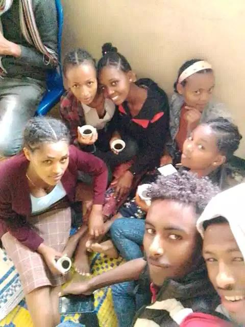

wa'ee ku'aari E
Wa'ee ku'aari kanaa ammaan beeku ibsuun yaala garu namootni nacaala beektaan akka jirtaan naan beeka yoon dogoggoree na hofkachaa
jedhuun barbaada jalqabatti. ku'aari kun kan inni hundeeffame bara 2005 E.C tti. haa ta'uuyyuu malee kan hundeesse yookiin ka'umsaa
ku'aari kanaa keessatti guddaan kan galateeffamu qabu fi waanti inni hundeesse immoo guddachaa fi mul'aacha kan deemu maqaan waaqayyoo guddaa
haa eebbifamu. hundeeffamu ku'aari kanaa keessatti waaqayyoo kara namaa yaada isaa rawwachaa akka turee fi ammaas raawwachaa akka jiru beekamaadha
. kanaafu namnii waaqayyoo itti fayyadamee akka hundeeffamu taasisee PASTEERI WALDAA SANAA yookiin PASTEERI WALDAA GUUTUU WANGEELA AMBOO GOOSU
PASTAAR GUUTUU SHIFARRAA nama jedhamaa akka ta'eedha. garuu yeroo sanaaf akkan wabeeffadhetti achii waaniin in turreef namootni bayyeen isaan
sadarkaa ijoollummaa irra akka jiranidha. garuu akkuma abbootiin beekaan guduruuni wallaalaan haarriin jedhaan haa ijoollummataan malee yerichii
yeroo isaa akka yaada ijollee yookiin akka nama waa in hubannee ta'ee in turee. isaaniif yeroo jaalala waaqayyoo dhamdhamaani mi'eeffachuu fi waaqayyoon wajjiin haala bareeda fi boqonnaa qabu ture. Bayyee namoota carraa qabeeyyi turaan jechuudha sabaabni isaas waaqayyoon wajjiin jiraachu kan caalu injiru waan ta'eef. Eegaa adeemsa keessa guddachaa akkuma deemaan bayyeen saani hojiidhaan, sababaa gaa'ilaatiin akkasumaas haalotaa gara garaatiin iddoo gara iddootti akkuma socho'aan iddoo gara garaatti akkuma deemaan akkasumaas namoonni hedduun immoo gara garee kanatti dhufaa akka jiraan beekamaadha. haa ta'uuyyu malee namoota garee kana keessa turanii haloota jireenyaaf jechaa gara kan biraa jiraatan keessaa ani nama tokkodha. MAQAAN BIKILA TAYE NIGISA yoo ta'u anii kaniin gara garee kanaa dhaqee bara 2012 dha. bara 2012 kaase yeroo dheeraf yookin turtii waggaan lakkaa'amu isaan wajjiinin ture jechuudha. turtiin isaan wajjiin ture keessatti wa'ee garee kanaa kaniin dubbachuu barbaadu waan muraasa yoon ibsuu, garee bayyee wal dheebu walii qabuufi akkasumaas walkabajuu akka ta'aaniifi inaaffa mana waaqayyoo akka qabaan dhugaatti dubbachuun barbaada. maal kana qofa ergama guddicha kan goofta namoota isaa duuka b'aan hundaatti kenne garu bayyeen irraanfatee kan jiru wal dammaqsuudha dhaloota hedduu harkaa seexanaatti baasa akka jiraan beekamaadha. garuu wa'ee garee kana yookiis akkuma walii galaatti tokkummaa ku'aari AMBOO GOOSU GUUTUU WAANGELAA keessa namootni jiraan yookiin dargagoonni fi qareen jiraan namoota gurguddoo dubbiin waaqayyoo harka jiru akka ta'aanidha Isaan keessaa ku'aari E(GAREEN 5ffaa) isaan tokko akka ta'aanidha. haa ta'uu malee dhaloota boru biyyaafis ta'ee waldaa kirstaanaf bu'aa buusaan keessaa isaan tokkodha. Yoon bayyee jedhee yeroon naan ga'uu waan ta'eef kanuma jedhee yoo dhiise wayyaa, ammas dabalee kaniin jechuu barbaadu bara koo keessatti akkan isiin yaadadhuufi kaniin ani website kana hojadheef, gareen jaaladhuf kabaja guddaa qabuuf GAREE 5FFAA (KU'AARI E) naaf jiraadha guddaan iddoo guddaa isiniif qabaa jabaadha wal jabeessaan ergaa kooti.
Tajaajilli isaan kennaan kanneen armaan gadiiti

ibsa jalqabaa
Garee kana keessa namootni waaqeffachiisan(worshiper) , kan hayyaanni waaqayyoo irraa jiruu fi akkasumaas , dhugaaf hafuuraan saba waaqayyoo akka isaan waaqayyoon wajjiin wal-argaan kan taasisaan garee kana keessa akka jiraan beekamaadha. akkasumaas gara fuulla duraatti, biyyaa keenyaaf farfannaa osoo intaane waaqayyoon kan faarsa fi hulfina waaqayyoo kan mul'isaan akka jiranidha.
ibsa lammaffaa
Fakkeessaaf osoo intaane garee kana keessa namoota jaalala beekanii fi akkasumaas, kiristaana kan ta'ee hundummaaf jaalala isa kan kiristoos kan hawwaniif dhugaati akka jiraanidha. Haata'uyyuu malee garee kun tajaajila ku'aar gareen yeroo farfataan bayyee kan nama ajaa'ibu sinboo addaa fi hayyaanni waaqayyoo akka dinqisiisatti isaan wajjiin mul'ataa. yeroo akkas jedhamuu gareen kun tokkummaadhaan farfannaan waaqayyoon akka jajataan beekamaadha.
ibsa sadaffaa
dhugaa jiru dubbachuuf anii namnii WEBSITE kana barreesse BIKILA TAYEEN jedhama, waan kana hundumaa yaade akkan website xiqqoo kana hojjadhu kana nagodhee otoon kara gara garaa BUSY ta'uu jaalala ku'aariin(gareen) kun keessa koo kaa'aan bayyee jireenya koo waan jijjireefi akkasumaas baruun kan namoota hundaaf ta'u garu namoonni hundi immoo kan otoo in bariin jiraan kiristoos yesuusiin akka ajaa'ibaatti mi'aafi jaalalli isaa maal akka ta'ee kan nabarsiisaan waan ta'eef kabajaafi jaalalaan isaanif qabu karaan ibsadhu yaadeen ibsuufi indandeenye, garu waan tokko yaadeen website kana hojjadhee, inni mucaan nama amma lafa kanarra jiraatutti lubbuun jiraachuf yookiis jireenya garii ta'ee tokko jiraachuuf kara garaagara otoo in jaalatiin iddoo hireen isaaf kennee jiraachu filataa, aniis waggoota afuuriif(4) otoo addaan in kutiin garee kana wajjiin jaalalaafi kabajaan isaan wajjiin tajaajilaa tureera garu akkumaan armaan olitti caqasee iddoo hiree namaaf kennee jiraatutti waan ta'eef sababaa barnootaaf isaan irraa addaan ba'een yeroo boqonnaa(break) qofaan dheebu guddaa osoon isaan dheebodhuun yoo bayyatee ji'aa lamaaf(2) isaan giddu turee gara dirree barnootaatti deebi'aa ture, garu amma yoo itti yaadu baraan barnoota digrii jalqabaa itti xumuree akka nama tokko waanan baradheen yoo fedha waaqayyo ta'ee hojjadhee jiraachuuf jirudha haa ta'u malee yeroo kaano ji'aaf guyyaa lakkaan ammanatu naaf afee galee ku'aari koo gidduu jiraachuf jedheen guyyaaf sa'aati lakkaa'aa garu kan bara kanaa yookiin bara 2017 bayyee gaffii natti ta'ee jira? hundaaf namoota amma garee kana keessa jiraniifis ta'ee kan ganaa dhufaniif bakka kamuu yoo deemaan kara website kanaa seenanii akka isaan garee kana yaadataniifi jedheen website kana hojjachuu yaale, kanaafu kanaan jechuu barbaadu gabaabse "bayyee jaalalaa fi kabaja guddaa nabiraa qabduu bara koo keessatti isiniin yaadadha jabadhaa. "Yesus Karaa Gara Abbaatti Geessu Ta'uu Isaa 141 Yesus itti fufee bartoota isaatiin, “Garaan keessan hin raafamin, Waaqayyotti amanaa, anattis amanaa*! 2 Mana abbaa koo keessa iddoon jireenyaa baay'eetu jira; utuu inni hin jiru ta'ee, isinitti nan himan ture; iddoo jiru sana isiniif qopheessuudhaaf nan adeema*. 3 Yommuun dhaqee iddoo sana isiniif qopheessus, iddoodhuma ani jiru isinis akka jiraattaniif, deebi'ee dhufeetan gara ofii kootiitti isin fudhadha*. 4 Lafa ani dhaqu, karicha achi geessus in beektu” jedhe. 5 Toomaas immoo, “Yaa gooftaa, eessa akka ati dhaqxu hin beeknu, karicha immoo attamitti beekuu dandeenya?” jedheen. 6 Yesus deebisee, “Karichi, dhugaan, jireenyis, ana; anaan yoo ta'e malee, eenyu iyyuu gara abbaa hin dhufu*. 7 Ana beektanii utuu jiraattanii, abbaa koos in beektu turtan; ammaa jalqabdanii isa in beektu, isa argitaniittus” jedheen*..